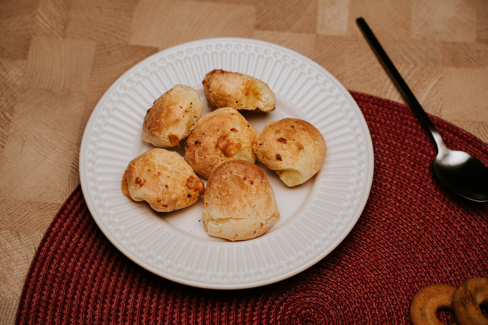

Back to Home
Pão de Queijo

Description
Pão de queijo is a traditional Brazilian cheese bread with a crisp golden
crust and a soft, chewy center. It is naturally gluten-free because it is
made with cassava starch instead of wheat flour.
It is a classic of Minas Gerais, perfect for breakfast or an afternoon
coffee, and best eaten warm, straight from the oven.
Ingredients
- 300 g sour cassava starch (polvilho azedo)
- 200 ml whole milk
- 100 ml vegetable oil
- 1 teaspoon salt
- 2 large eggs
- 200 g grated cheese (Minas cheese or Parmesan)
Steps
- Preheat the oven to 200°C (390°F).
- Bring the milk, oil, and salt to a boil in a saucepan.
-
Pour the hot mixture over the cassava starch in a large bowl and stir
until it looks crumbly.
- Let the dough cool for 10 minutes.
-
Add the eggs and the grated cheese, then knead until you get a smooth,
sticky dough.
-
With oiled hands, roll the dough into balls about the size of a golf
ball.
-
Place the balls on a baking tray, leaving a little space between them.
- Bake for 25 minutes, until puffed and golden. Serve warm.